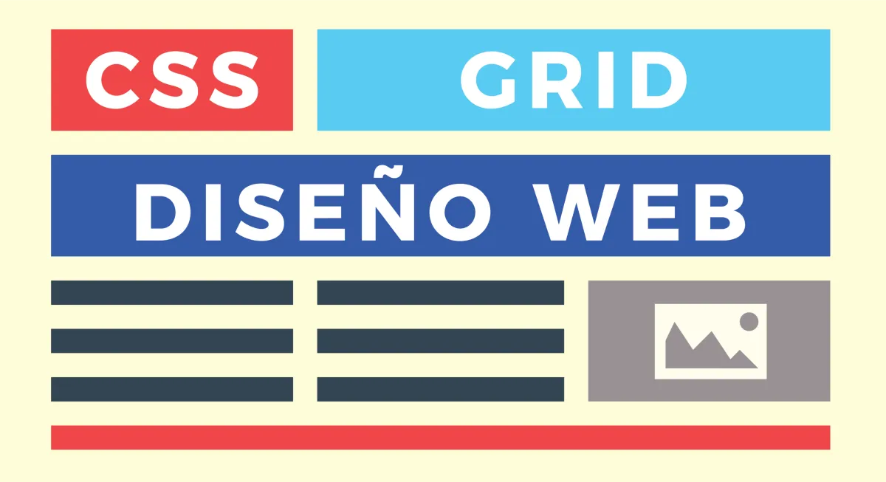

CSS (Cascading Style Sheets) es un lenguaje de diseño utilizado para describir el aspecto y el formato de un documento HTML, XML u otro tipo de documento estructurado. Se utiliza para definir la presentación visual de un sitio web, incluyendo aspectos como el color, la fuente, el tamaño, el diseño y la disposición de los elementos.
Relacion de CSS con HTML

CSS funciona separadamente del HTML, lo que permite a los desarrolladores de sitios web separar el contenido del diseño y el formato. Esto hace que el desarrollo de sitios web sea más eficiente, ya que los cambios de diseño pueden realizarse fácilmente a través de una hoja de estilo CSS centralizada, en lugar de tener que modificar cada página individualmente.
CSS se aplica a través de reglas que se definen en una hoja de estilo, que se puede enlazar con un documento HTML utilizando una etiqueta <link> en el encabezado del documento o directamente en el atributo "style" de un elemento HTML específico. Las reglas CSS pueden aplicarse a elementos individuales, como un encabezado o un párrafo, o a grupos de elementos que comparten un atributo común, como todos los enlaces o todos los párrafos en una página.